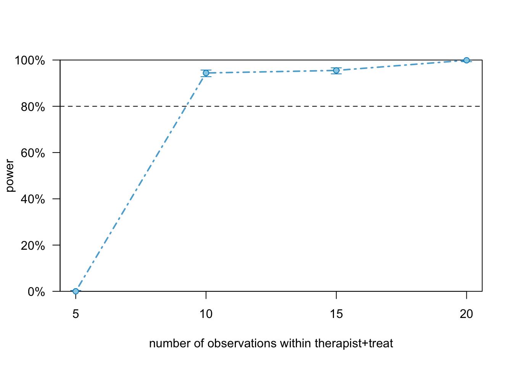

# Seed for random number generation
set.seed(42)Ada: An AI-Enabled Clinical Decision Support Tool
Metadata
Title:
Ada: An AI-Enabled Clinical Decision Support Tool
Description:
The integration of AI-driven tools such as Ada Health’s symptom checker into healthcare settings aims to enhance the clinical decision-making process, improve patient care, and increase diagnostic efficiency. This study specifically evaluates the effectiveness of Ada in aiding healthcare providers and patients in mental health care settings, focusing on a broad range of conditions, particularly low-acuity mental health conditions.
The aim of the study is to assess the impact of the symptom assessment report on the efficiency of disease diagnosis (i.e., time to diagnosis and confidence in diagnosis), patient and provider preparedness for consultation, and patient anxiety and informedness. In addition, the subjective usefulness and ease of use of the Ada symptom checker as a diagnostic aid for psychotherapists will be assessed.
Study information
Hypotheses:
Hypothesis 1: Ada increases the level of understanding of symptoms.
Hypothesis 2: Ada decreases the level of anxiety.
Hypothesis 3: Ada increases the quality of symptom management.
Hypothesis 4: Ada increases the confidence in choosing the right point of care
Hypothesis 5: Ada increases the self-management knowledge.
Hypothesis 6: Ada increases the level of preparedness for psychotherapy session.
Hypothesis 7: Ada increases the satisfaction with therapeutic process.
Design plan
Study type:
- Experiment
Blinding:
- No blinding is involved in this study.
Is there any additional blinding in this study?
No.
Study design:
Between and within subjects design.
Randomization:
Randomized experiment (Ada symptom report vs no Ada symptom report)
Sampling plan
Existing data:
Registration prior to creation of data.
Explanation of existing data:
NA
Data collection procedures:
Through healthcare staff at clinics.
Sample size:
The results of the simulation study suggest that at least X should be included to reach a power of > 80%.
Sample size rationale:
See power analysis.
Stopping rule:
Data will be collected until a sufficient sample size is reached (see attached power calculations).
Variables
Manipulated variables:
Ada symptom report.
Measured variables:
- Symptom understanding
- Anxiety
- Symptom management
- Confidence in care choice
- Self-management knowledge
- Preparedness
- Satisfaction with therapeutic process
Analysis plan
Statistical models:
Multilevel randomized controlled trial.
Transformations:
Grand-mean centering of between variables; person-mean centering of within variables
Inference criteria:
Confidence intervals and p-values.
Missing data:
NA
Other
Other
NA
Power analysis
Example studies for effect size estimation
Tutorials
Effect sizes for experimental trials analyzed with multilevel growth models
SIMR: an R package for power analysis of generalized linear mixed models by simulation
Estimands
- Intercept
- Slope for the intervention
- Slope for the time effect
- Slope for the intervention:time interaction
- Random intercepts for participants nested in therapists
- Residual variance
Create dataset
patient <- factor(1:50)
therapist_id <- letters[1:5]
time <- 0:1
group <- c("control", "intervention")
patient_full <- rep(patient, 2)
therapist_full <- rep(rep(therapist_id, each=10), 2)
time_full <- rep(time, each=50)
group_full <- rep(rep(group, each=5), 10)
covars <- data.frame(patient=patient_full, therapist=therapist_full, treat=group_full, time=factor(time_full))
covars patient therapist treat time
1 1 a control 0
2 2 a control 0
3 3 a control 0
4 4 a control 0
5 5 a control 0
6 6 a intervention 0
7 7 a intervention 0
8 8 a intervention 0
9 9 a intervention 0
10 10 a intervention 0
11 11 b control 0
12 12 b control 0
13 13 b control 0
14 14 b control 0
15 15 b control 0
16 16 b intervention 0
17 17 b intervention 0
18 18 b intervention 0
19 19 b intervention 0
20 20 b intervention 0
21 21 c control 0
22 22 c control 0
23 23 c control 0
24 24 c control 0
25 25 c control 0
26 26 c intervention 0
27 27 c intervention 0
28 28 c intervention 0
29 29 c intervention 0
30 30 c intervention 0
31 31 d control 0
32 32 d control 0
33 33 d control 0
34 34 d control 0
35 35 d control 0
36 36 d intervention 0
37 37 d intervention 0
38 38 d intervention 0
39 39 d intervention 0
40 40 d intervention 0
41 41 e control 0
42 42 e control 0
43 43 e control 0
44 44 e control 0
45 45 e control 0
46 46 e intervention 0
47 47 e intervention 0
48 48 e intervention 0
49 49 e intervention 0
50 50 e intervention 0
51 1 a control 1
52 2 a control 1
53 3 a control 1
54 4 a control 1
55 5 a control 1
56 6 a intervention 1
57 7 a intervention 1
58 8 a intervention 1
59 9 a intervention 1
60 10 a intervention 1
61 11 b control 1
62 12 b control 1
63 13 b control 1
64 14 b control 1
65 15 b control 1
66 16 b intervention 1
67 17 b intervention 1
68 18 b intervention 1
69 19 b intervention 1
70 20 b intervention 1
71 21 c control 1
72 22 c control 1
73 23 c control 1
74 24 c control 1
75 25 c control 1
76 26 c intervention 1
77 27 c intervention 1
78 28 c intervention 1
79 29 c intervention 1
80 30 c intervention 1
81 31 d control 1
82 32 d control 1
83 33 d control 1
84 34 d control 1
85 35 d control 1
86 36 d intervention 1
87 37 d intervention 1
88 38 d intervention 1
89 39 d intervention 1
90 40 d intervention 1
91 41 e control 1
92 42 e control 1
93 43 e control 1
94 44 e control 1
95 45 e control 1
96 46 e intervention 1
97 47 e intervention 1
98 48 e intervention 1
99 49 e intervention 1
100 50 e intervention 1## Intercept and slopes for intervention, time1, intervention:time1 (currently all from Lutz et al., 2022)
fixed <- c(0.03, # intercept
0.34, # slope intervention (mean of the three effects in Lutz et al.)
0.6, # slope time 1
0.4) # slope intervention:time1
## Random intercepts for participants nested in therapist
rand <- list(0.01)
## residual SD
res <- 0.7Create model
library(simr)
model <- makeLmer(y ~ treat*time + (1|therapist), fixef=fixed, VarCorr=rand, sigma=res, data=covars)
modelLinear mixed model fit by REML ['lmerMod']
Formula: y ~ treat * time + (1 | therapist)
Data: covars
REML criterion at convergence: 229.8401
Random effects:
Groups Name Std.Dev.
therapist (Intercept) 0.1
Residual 0.7
Number of obs: 100, groups: therapist, 5
Fixed Effects:
(Intercept) treatintervention time1
0.03 0.34 0.60
treatintervention:time1
0.40 Power analysis
We are interested in the effect of the intervention. Since the treatment variable is part of an interaction we will assess its effect by comparing the model specified above to the the alternative model that doesn’t include a treatment variable
sim_treat <- powerSim(model, nsim=100, test = fcompare(y~time))Simulating: | |Simulating: |= |Simulating: |== |Simulating: |=== |Simulating: |==== |Simulating: |===== |Simulating: |====== |Simulating: |======= |Simulating: |======== |Simulating: |========= |Simulating: |========== |Simulating: |=========== |Simulating: |============ |Simulating: |============= |Simulating: |============== |Simulating: |=============== |Simulating: |================ |Simulating: |================= |Simulating: |================== |Simulating: |=================== |Simulating: |==================== |Simulating: |===================== |Simulating: |====================== |Simulating: |======================= |Simulating: |======================== |Simulating: |========================= |Simulating: |========================== |Simulating: |=========================== |Simulating: |============================ |Simulating: |============================= |Simulating: |============================== |Simulating: |=============================== |Simulating: |================================ |Simulating: |================================= |Simulating: |================================== |Simulating: |=================================== |Simulating: |==================================== |Simulating: |===================================== |Simulating: |====================================== |Simulating: |======================================= |Simulating: |======================================== |Simulating: |========================================= |Simulating: |========================================== |Simulating: |=========================================== |Simulating: |============================================ |Simulating: |============================================= |Simulating: |============================================== |Simulating: |=============================================== |Simulating: |================================================ |Simulating: |================================================= |Simulating: |================================================== |Simulating: |=================================================== |Simulating: |==================================================== |Simulating: |===================================================== |Simulating: |====================================================== |Simulating: |======================================================= |Simulating: |======================================================== |Simulating: |========================================================= |Simulating: |========================================================== |Simulating: |=========================================================== |Simulating: |============================================================ |Simulating: |============================================================= |Simulating: |============================================================== |Simulating: |=============================================================== |Simulating: |================================================================ |Simulating: |================================================================= |Simulating: |==================================================================|sim_treatPower for model comparison, (95% confidence interval):
100.0% (96.38, 100.0)
Test: Likelihood ratio
Comparison to y ~ time + [re]
Based on 100 simulations, (1 warning, 0 errors)
alpha = 0.05, nrow = 150
Time elapsed: 0 h 0 m 4 sIncrease sample size
model_ext_patient <- extend(model, within="therapist+treat", n=20)
model_ext_patientLinear mixed model fit by REML ['lmerMod']
Formula: y ~ treat * time + (1 | therapist)
Data: covars
REML criterion at convergence: 229.8401
Random effects:
Groups Name Std.Dev.
therapist (Intercept) 0.1
Residual 0.7
Number of obs: 100, groups: therapist, 5
Fixed Effects:
(Intercept) treatintervention time1
0.03 0.34 0.60
treatintervention:time1
0.40 sim_treat_patient <- powerSim(model_ext_patient, nsim=100, test = fcompare(y~time))Simulating: | |Simulating: |= |Simulating: |== |Simulating: |=== |Simulating: |==== |Simulating: |===== |Simulating: |====== |Simulating: |======= |Simulating: |======== |Simulating: |========= |Simulating: |========== |Simulating: |=========== |Simulating: |============ |Simulating: |============= |Simulating: |============== |Simulating: |=============== |Simulating: |================ |Simulating: |================= |Simulating: |================== |Simulating: |=================== |Simulating: |==================== |Simulating: |===================== |Simulating: |====================== |Simulating: |======================= |Simulating: |======================== |Simulating: |========================= |Simulating: |========================== |Simulating: |=========================== |Simulating: |============================ |Simulating: |============================= |Simulating: |============================== |Simulating: |=============================== |Simulating: |================================ |Simulating: |================================= |Simulating: |================================== |Simulating: |=================================== |Simulating: |==================================== |Simulating: |===================================== |Simulating: |====================================== |Simulating: |======================================= |Simulating: |======================================== |Simulating: |========================================= |Simulating: |========================================== |Simulating: |=========================================== |Simulating: |============================================ |Simulating: |============================================= |Simulating: |============================================== |Simulating: |=============================================== |Simulating: |================================================ |Simulating: |================================================= |Simulating: |================================================== |Simulating: |=================================================== |Simulating: |==================================================== |Simulating: |===================================================== |Simulating: |====================================================== |Simulating: |======================================================= |Simulating: |======================================================== |Simulating: |========================================================= |Simulating: |========================================================== |Simulating: |=========================================================== |Simulating: |============================================================ |Simulating: |============================================================= |Simulating: |============================================================== |Simulating: |=============================================================== |Simulating: |================================================================ |Simulating: |================================================================= |Simulating: |==================================================================|sim_treat_patientPower for model comparison, (95% confidence interval):
100.0% (96.38, 100.0)
Test: Likelihood ratio
Comparison to y ~ time + [re]
Based on 100 simulations, (2 warnings, 0 errors)
alpha = 0.05, nrow = 200
Time elapsed: 0 h 0 m 3 sp_curve_treat <- powerCurve(model_ext_patient, test=fcompare(y~time), within="therapist+treat", breaks=c(5,10,15,20))Simulating: | |Simulating: |= |Simulating: |== |Simulating: |=== |Simulating: |==== |Simulating: |===== |Simulating: |====== |Simulating: |======= |Simulating: |======== |Simulating: |========= |Simulating: |========== |Simulating: |=========== |Simulating: |============ |Simulating: |============= |Simulating: |============== |Simulating: |=============== |Simulating: |================ |Simulating: |================= |Simulating: |================== |Simulating: |=================== |Simulating: |==================== |Simulating: |===================== |Simulating: |====================== |Simulating: |======================= |Simulating: |======================== |Simulating: |========================= |Simulating: |========================== |Simulating: |=========================== |Simulating: |============================ |Simulating: |============================= |Simulating: |============================== |Simulating: |=============================== |Simulating: |================================ |Simulating: |================================= |Simulating: |================================== |Simulating: |=================================== |Simulating: |==================================== |Simulating: |===================================== |Simulating: |====================================== |Simulating: |======================================= |Simulating: |======================================== |Simulating: |========================================= |Simulating: |========================================== |Simulating: |=========================================== |Simulating: |============================================ |Simulating: |============================================= |Simulating: |============================================== |Simulating: |=============================================== |Simulating: |================================================ |Simulating: |================================================= |Simulating: |================================================== |Simulating: |=================================================== |Simulating: |==================================================== |Simulating: |===================================================== |Simulating: |====================================================== |Simulating: |======================================================= |Simulating: |======================================================== |Simulating: |========================================================= |Simulating: |========================================================== |Simulating: |=========================================================== |Simulating: |============================================================ |Simulating: |============================================================= |Simulating: |============================================================== |Simulating: |=============================================================== |Simulating: |================================================================ |Simulating: |================================================================= |Simulating: |==================================================================|(1/4) (1/4) Simulating: | |(1/4) Simulating: |= |(1/4) Simulating: |== |(1/4) Simulating: |=== |(1/4) Simulating: |==== |(1/4) Simulating: |===== |(1/4) Simulating: |====== |(1/4) Simulating: |======= |(1/4) Simulating: |======== |(1/4) Simulating: |========= |(1/4) Simulating: |========== |(1/4) Simulating: |=========== |(1/4) Simulating: |============ |(1/4) Simulating: |============= |(1/4) Simulating: |============== |(1/4) Simulating: |=============== |(1/4) Simulating: |================ |(1/4) Simulating: |================= |(1/4) Simulating: |================== |(1/4) Simulating: |=================== |(1/4) Simulating: |==================== |(1/4) Simulating: |===================== |(1/4) Simulating: |====================== |(1/4) Simulating: |======================= |(1/4) Simulating: |======================== |(1/4) Simulating: |========================= |(1/4) Simulating: |========================== |(1/4) Simulating: |=========================== |(1/4) Simulating: |============================ |(1/4) Simulating: |============================= |(1/4) Simulating: |============================== |(1/4) Simulating: |=============================== |(1/4) Simulating: |================================ |(1/4) Simulating: |================================= |(1/4) Simulating: |================================== |(1/4) Simulating: |=================================== |(1/4) Simulating: |==================================== |(1/4) Simulating: |===================================== |(1/4) Simulating: |====================================== |(1/4) Simulating: |======================================= |(1/4) Simulating: |======================================== |(1/4) Simulating: |========================================= |(1/4) Simulating: |========================================== |(1/4) Simulating: |=========================================== |(1/4) Simulating: |============================================ |(1/4) Simulating: |============================================= |(1/4) Simulating: |============================================== |(1/4) Simulating: |=============================================== |(1/4) Simulating: |================================================ |(1/4) Simulating: |================================================= |(1/4) Simulating: |================================================== |(1/4) Simulating: |=================================================== |(1/4) Simulating: |==================================================== |(1/4) Simulating: |===================================================== |(1/4) Simulating: |====================================================== |(1/4) Simulating: |======================================================= |(1/4) Simulating: |======================================================== |(1/4) Simulating: |========================================================= |(1/4) Simulating: |========================================================== |(1/4) Simulating: |=========================================================== |(1/4) Simulating: |============================================================|(1/4) (2/4) (2/4) Simulating: | |(2/4) Simulating: |= |(2/4) Simulating: |== |(2/4) Simulating: |=== |(2/4) Simulating: |==== |(2/4) Simulating: |===== |(2/4) Simulating: |====== |(2/4) Simulating: |======= |(2/4) Simulating: |======== |(2/4) Simulating: |========= |(2/4) Simulating: |========== |(2/4) Simulating: |=========== |(2/4) Simulating: |============ |(2/4) Simulating: |============= |(2/4) Simulating: |============== |(2/4) Simulating: |=============== |(2/4) Simulating: |================ |(2/4) Simulating: |================= |(2/4) Simulating: |================== |(2/4) Simulating: |=================== |(2/4) Simulating: |==================== |(2/4) Simulating: |===================== |(2/4) Simulating: |====================== |(2/4) Simulating: |======================= |(2/4) Simulating: |======================== |(2/4) Simulating: |========================= |(2/4) Simulating: |========================== |(2/4) Simulating: |=========================== |(2/4) Simulating: |============================ |(2/4) Simulating: |============================= |(2/4) Simulating: |============================== |(2/4) Simulating: |=============================== |(2/4) Simulating: |================================ |(2/4) Simulating: |================================= |(2/4) Simulating: |================================== |(2/4) Simulating: |=================================== |(2/4) Simulating: |==================================== |(2/4) Simulating: |===================================== |(2/4) Simulating: |====================================== |(2/4) Simulating: |======================================= |(2/4) Simulating: |======================================== |(2/4) Simulating: |========================================= |(2/4) Simulating: |========================================== |(2/4) Simulating: |=========================================== |(2/4) Simulating: |============================================ |(2/4) Simulating: |============================================= |(2/4) Simulating: |============================================== |(2/4) Simulating: |=============================================== |(2/4) Simulating: |================================================ |(2/4) Simulating: |================================================= |(2/4) Simulating: |================================================== |(2/4) Simulating: |=================================================== |(2/4) Simulating: |==================================================== |(2/4) Simulating: |===================================================== |(2/4) Simulating: |====================================================== |(2/4) Simulating: |======================================================= |(2/4) Simulating: |======================================================== |(2/4) Simulating: |========================================================= |(2/4) Simulating: |========================================================== |(2/4) Simulating: |=========================================================== |(2/4) Simulating: |============================================================|(2/4) (3/4) (3/4) Simulating: | |(3/4) Simulating: |= |(3/4) Simulating: |== |(3/4) Simulating: |=== |(3/4) Simulating: |==== |(3/4) Simulating: |===== |(3/4) Simulating: |====== |(3/4) Simulating: |======= |(3/4) Simulating: |======== |(3/4) Simulating: |========= |(3/4) Simulating: |========== |(3/4) Simulating: |=========== |(3/4) Simulating: |============ |(3/4) Simulating: |============= |(3/4) Simulating: |============== |(3/4) Simulating: |=============== |(3/4) Simulating: |================ |(3/4) Simulating: |================= |(3/4) Simulating: |================== |(3/4) Simulating: |=================== |(3/4) Simulating: |==================== |(3/4) Simulating: |===================== |(3/4) Simulating: |====================== |(3/4) Simulating: |======================= |(3/4) Simulating: |======================== |(3/4) Simulating: |========================= |(3/4) Simulating: |========================== |(3/4) Simulating: |=========================== |(3/4) Simulating: |============================ |(3/4) Simulating: |============================= |(3/4) Simulating: |============================== |(3/4) Simulating: |=============================== |(3/4) Simulating: |================================ |(3/4) Simulating: |================================= |(3/4) Simulating: |================================== |(3/4) Simulating: |=================================== |(3/4) Simulating: |==================================== |(3/4) Simulating: |===================================== |(3/4) Simulating: |====================================== |(3/4) Simulating: |======================================= |(3/4) Simulating: |======================================== |(3/4) Simulating: |========================================= |(3/4) Simulating: |========================================== |(3/4) Simulating: |=========================================== |(3/4) Simulating: |============================================ |(3/4) Simulating: |============================================= |(3/4) Simulating: |============================================== |(3/4) Simulating: |=============================================== |(3/4) Simulating: |================================================ |(3/4) Simulating: |================================================= |(3/4) Simulating: |================================================== |(3/4) Simulating: |=================================================== |(3/4) Simulating: |==================================================== |(3/4) Simulating: |===================================================== |(3/4) Simulating: |====================================================== |(3/4) Simulating: |======================================================= |(3/4) Simulating: |======================================================== |(3/4) Simulating: |========================================================= |(3/4) Simulating: |========================================================== |(3/4) Simulating: |=========================================================== |(3/4) Simulating: |============================================================|(3/4) (4/4) (4/4) Simulating: | |(4/4) Simulating: |= |(4/4) Simulating: |== |(4/4) Simulating: |=== |(4/4) Simulating: |==== |(4/4) Simulating: |===== |(4/4) Simulating: |====== |(4/4) Simulating: |======= |(4/4) Simulating: |======== |(4/4) Simulating: |========= |(4/4) Simulating: |========== |(4/4) Simulating: |=========== |(4/4) Simulating: |============ |(4/4) Simulating: |============= |(4/4) Simulating: |============== |(4/4) Simulating: |=============== |(4/4) Simulating: |================ |(4/4) Simulating: |================= |(4/4) Simulating: |================== |(4/4) Simulating: |=================== |(4/4) Simulating: |==================== |(4/4) Simulating: |===================== |(4/4) Simulating: |====================== |(4/4) Simulating: |======================= |(4/4) Simulating: |======================== |(4/4) Simulating: |========================= |(4/4) Simulating: |========================== |(4/4) Simulating: |=========================== |(4/4) Simulating: |============================ |(4/4) Simulating: |============================= |(4/4) Simulating: |============================== |(4/4) Simulating: |=============================== |(4/4) Simulating: |================================ |(4/4) Simulating: |================================= |(4/4) Simulating: |================================== |(4/4) Simulating: |=================================== |(4/4) Simulating: |==================================== |(4/4) Simulating: |===================================== |(4/4) Simulating: |====================================== |(4/4) Simulating: |======================================= |(4/4) Simulating: |======================================== |(4/4) Simulating: |========================================= |(4/4) Simulating: |========================================== |(4/4) Simulating: |=========================================== |(4/4) Simulating: |============================================ |(4/4) Simulating: |============================================= |(4/4) Simulating: |============================================== |(4/4) Simulating: |=============================================== |(4/4) Simulating: |================================================ |(4/4) Simulating: |================================================= |(4/4) Simulating: |================================================== |(4/4) Simulating: |=================================================== |(4/4) Simulating: |==================================================== |(4/4) Simulating: |===================================================== |(4/4) Simulating: |====================================================== |(4/4) Simulating: |======================================================= |(4/4) Simulating: |======================================================== |(4/4) Simulating: |========================================================= |(4/4) Simulating: |========================================================== |(4/4) Simulating: |=========================================================== |(4/4) Simulating: |============================================================|(4/4) plot(p_curve_treat)